| 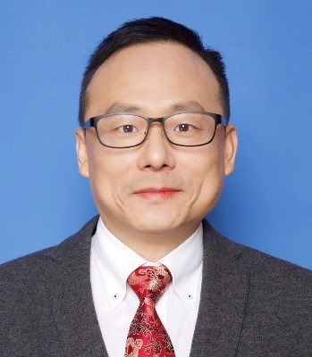 | Zhongze Gu, --Dean of School of Biological Science & Medical Engineering, Southeast University (Conference Chair) |
| 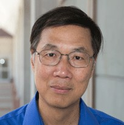 | |
| 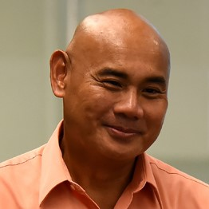 | Danilo A. Tagle --Associate Director for Special Initiatives, National Center for Advancing Translational Sciences, National Institutes of Health (NIH), USA. (co-Chair) |
| 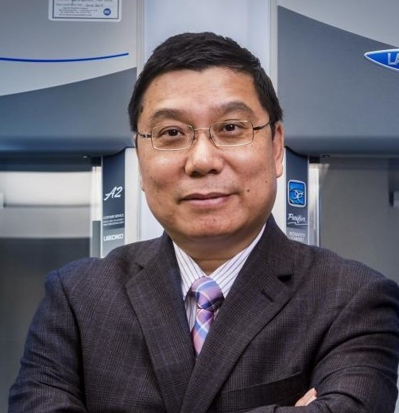 | Kaiming Ye --Professor of Biomedical Engineering and Pharmacology, State University of New York at Binghamton, USA. (co-Chair) |
| 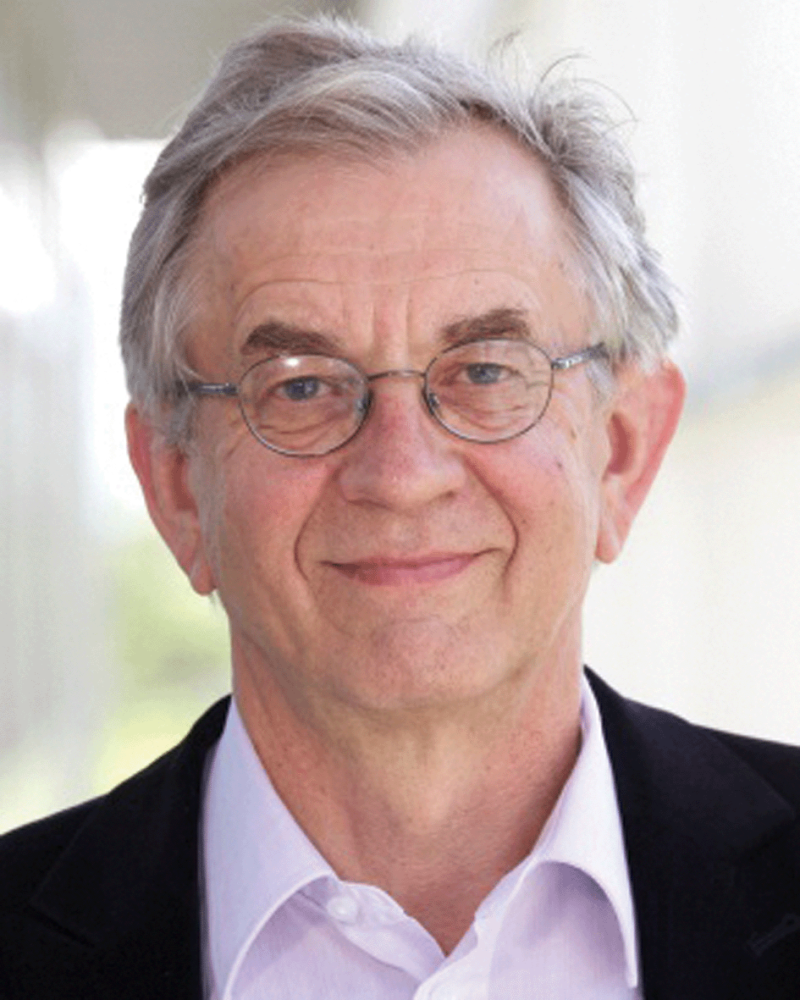 | Marcus Textor -- Prof. em., Biointerfaces, Swiss Federal Institute of Technology (ETH Zurich), Switzerland. (co-Chair) |
| 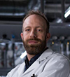 | Peter Loskill --Professor, Head of the Department for Microphysiological Systems, University of Tübingen, Germany. |
| 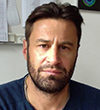 | Matthias P. Lutolf --Professor, Director of the Institute of Bioengineering, Head of the Laboratory of Stem Cell Bioengineering, Swiss Federal Institute of Technology (EPFL, Lausanne), Switzerland. |
Jan Lichtenberg --Co-Founder & CEO of InSphero Inc., Zurich, Switzerland. |
|
Lena Smirnova --Research Associate, Center for Alternatives to Animal Testing, Bloomberg School of Public Health, Johns Hopkins University. |
|
| 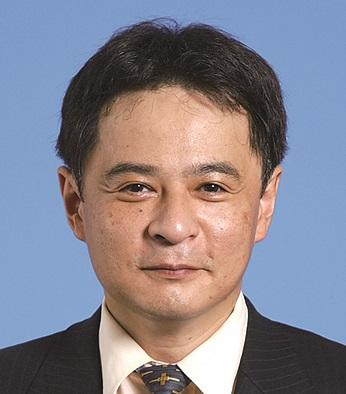 | Yasuyuki Sakai -- Professor of Chemical System Engineering，University of Tokyo，Japan. |
| 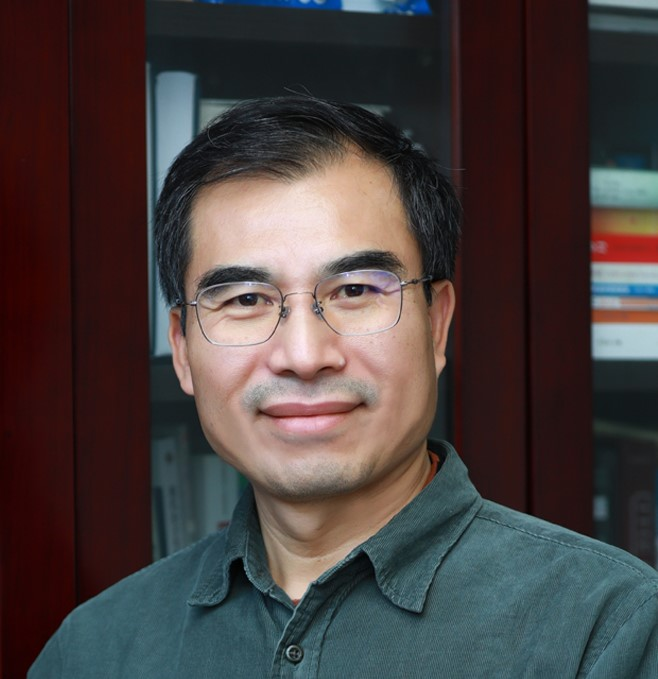 | 陈烨光 --清华大学、中国科学院院士。 |
赵建龙 --中科院上海微系统与信息技术研究所副所长，研究员 |
|
| 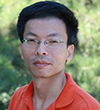 | 熊春阳 --北京大学工学院教授，北京大学前沿交叉学科研究院研究员 |
| 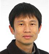 | 杨志谋 --国家杰出青年基金获得者，南开大学生命科学学院教授 |
|
往届会议报告